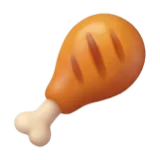
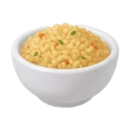
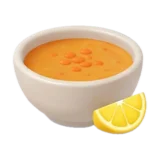
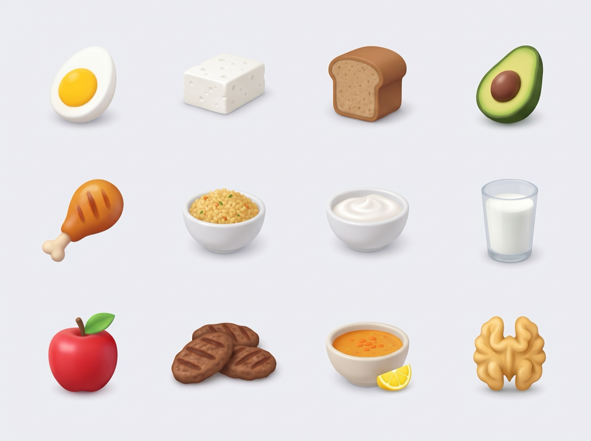

Diyet · gıda kütüphanesi · pilot
Gemini Pro'da üretildi; A1 seti stil referansı olarak verildi. Sonra her ikon kesildi, zemini kaldırıldı ve aynı kare tuvale aynı oranda yerleştirildi. Aşağıdaki her şey o şeffaf dosyalar: açık ve koyu temada aynı dosya kullanılıyor.
Uygulamada

Izgara tavuk2 muadil150 g
Bulgur pilavıveya 2 dilim ekmek4 yk
Mercimek çorbasıPlan dışı · yaklaşık 180 kcal
Yumurta3 adet
Peynir3 dilimSet
Kenarlarda beyaz hale ya da kesik kalıp kalmadığını en iyi koyu zemin gösterir.
Boyut
Ham çıktı
2400 × 1792 px, her hücre yaklaşık 600 px. İlk konsepte göre iki düzeltme istendi: köfte yassı ve ızgara izli, ceviz içi görünen altın renkte. İkisi artık karışmıyor.

Yöntem
kes.swift hücreleri böler, macOS Vision zemini kaldırır, kare tuvale %84 oranla yerleştirir.